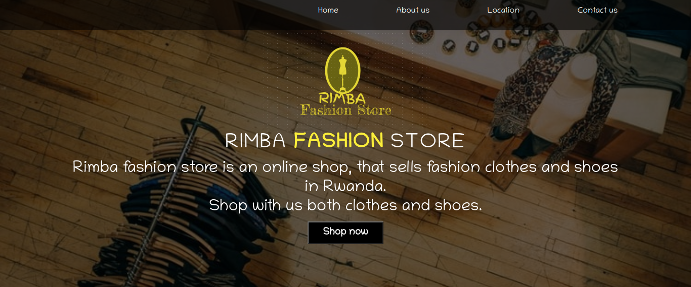

BELYSE UWAMBAYINEMA A So1ftware-Developer
ubelyse
belyse_paonne
Belyse_U
I am a self-motivated young woman of integrity and self-respect.I graduated my Highschool in 2016 from College Saint Andre, did my First and Second Yera of University at Parul University in India.
Adding to that, I did the 6 months Software Development training from Moringa School.
MORINGA-SCHOOL is a school that offers short term courses in software-development,I grew up having a passion of conributing to my society using technology
The passion and the desire of doing software development as my career pushed me to doing my university courses of computer application and I took the training to add more to my knowledge that I had.
Basketball my best interest
Guitar:I enjoy playing guitar as I worship God
I do enjoy reading books and doing different research on trending and old things, I like singing and enjoy worshipping God
I do have leadership,public speaking ,debate and computer skills.
I have been the
As a software debeloper,So far I still enjoy learning more about technology and I have learned some programing languages like, Javascript,PHP, Python,C#,Java and I am good at developing mobile applications I managed to do different projects. The website that I worked on was for a certain shop that sells shoes and clothes online I designed it in away that person can make orders anytime and in any place and they are delivered to him or her.
To view the website just click on this link Rimba Fashion Shop